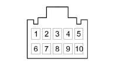

M086B ELECTRIC STEERING CONTROL UNIT (FRONT)
- Path
- Electrical equipment > 3 CONNECTORS > M INTERMITTENT AND TIMED ELECTRONIC DEVICES > M086 ELECTRIC STEERING CONTROL UNIT > M086B ELECTRIC STEERING CONTROL UNIT (FRONT)
- Kind
- connector pinout (pin -> wire colour -> other end)
- Applies to
- engines: 1.2 8v; all production periods; only with equipment: Smart gearbox
- Interactive page
- https://sloeber94.github.io/elrnDB-fPnd/en/#/169003464
Applies to: engines: 1.2 8v; all production periods; only with equipment: Smart gearbox

Wiring | Colour |
|---|---|
- |
Pin | Cable | Destination | |||
|---|---|---|---|---|---|
Sec.. | Colour | Node | Connect. | Pin | |
1 | 0,5 | CL (orange with blue stripe) | 16 | ||
2 | 0,5 | V (green) | 4 | ||
3 | 0,5 | M (brown) | 4 | ||
4 | 0,5 | BN (white with black stripe) | 1 | ||
7 | 0,5 | V (green) | 45 | ||
8 | 0,5 | M (brown) | 25 | ||
Topics linked from this page (6)
- 12 FRONT
- B001D JUNCTION UNIT (FRONT)
- D001 FRONT/DASHBOARD COUPLING
- D097G SHORT CIRCUITING COUPLING (FRONT)
- D097H SHORT CIRCUITING COUPLING (FRONT)
- M051 Braking system control unit
Topics that link to this page (17)
- B001D JUNCTION UNIT (FRONT)
- B001D JUNCTION UNIT (FRONT)
- B001D JUNCTION UNIT (FRONT)
- B001D JUNCTION UNIT (FRONT)
- B001D JUNCTION UNIT (FRONT)
- B001D JUNCTION UNIT (FRONT)
- B001D JUNCTION UNIT (FRONT)
- D001 FRONT/DASHBOARD COUPLING (FRONT)
- D001 FRONT/DASHBOARD COUPLING (FRONT)
- D001 FRONT/DASHBOARD COUPLING (FRONT)
- D001 FRONT/DASHBOARD COUPLING (FRONT)
- D001 FRONT/DASHBOARD COUPLING (FRONT)
- D097G SHORT CIRCUITING COUPLING (FRONT)
- M001C BODY COMPUTER (FRONT)
- M001C BODY COMPUTER (FRONT)
- M001C BODY COMPUTER (FRONT)
- M051 Braking system control unit (FRONT)